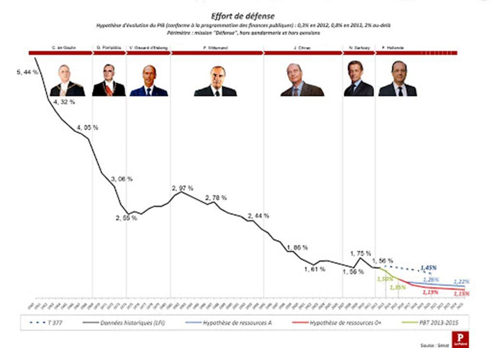

Depuis de nombreuses années, nos forces armées interviennent plus qu’efficacement aux quatre coins du globe, faisant l’admiration de nos alliés, la France étant l’un des rares pays à pouvoir projeter un système de forces complet à des milliers de kilomètres de ses bases. Avec moins de 5 000 hommes, notre pays contient les poussées islamistes au Sahel, fixe une partie de ses ennemis et ceux de l’Occident loin de nos terres sur une superficie équivalente à celle de l’Europe, soit un rapport coût-efficacité exceptionnel.
Mais ces actions admirables cachent une situation critique pour nos armées et laissent entrevoir le spectre inquiétant du Second Empire où des forces expéditionnaires aguerries n’ont pu faire face à la résurgence d’une menace majeure nécessitant de mobiliser des moyens en masse.
À l’heure du retour des États-puissance, la France n’est en effet pas prête à un conflit d’ampleur face à une armée conventionnelle classique bien équipée, ce que les spécialistes appellent un conflit « symétrique ».
Aujourd’hui, si notre force opérationnelle terrestre (FOT) de 77 000 hommes, renforcée suite aux attentats de 2015, est sur le papier capable de tenir la dragée haute aux 100 000 hommes véritablement opérationnels de l’armée de terre russe, Moscou dépensant autant que Paris pour sa défense avec des effectifs au moins trois fois supérieurs, il n’en est rien dans les faits.
Tout d’abord par la faiblesse du niveau de préparation opérationnelle de nos armées qui sont marquées par un suremploi et un sous entraînement, embolisées, notamment, par les déploiements de Sentinelle au rapport coût-efficacité discutable. Depuis le lancement de cette opération dite « intérieure », mobilisant jusqu’à 10 000 militaires quotidiennement, la cible de 90 jours de préparation opérationnelle par soldat de l’armée de Terre n’a plus été atteinte, stagnant à 80 jours.
De même, les nouvelles normes d’entraînement prévues, destinées à évaluer la capacité des équipages sur cinq matériels majeurs en service dans les forces terrestres - Leclerc, AMX 10RCR, VBCI, VAB et CAESAR - n’ont été réalisées qu’à 57 % en 2019. Or, l’efficacité d’une armée en opérations, qui plus est dans un conflit majeur, est d’abord le fruit de la résilience de ses petites unités, des groupes primaires au sens sociologique, là où tout le monde se connaît et partage le même quotidien. Or, cette résilience ne se décrète pas le jour du péril venu, quels que soient le soutien de la population et la motivation initiale des troupes. Elle se forge à travers des entraînements exigeants qui permettent aux individus de se connaître individuellement et collectivement comme de développer leur confiance en eux, en leur unité, à travers la maîtrise parfaite de systèmes d’armes de plus en plus complexes nécessitant un haut niveau de coordination. N’oublions jamais cette citation de Napoléon rappelant qu’ « À la guerre les trois quarts sont des affaires morales ; la balance des forces réelles n’est que pour un autre quart.1 », la sueur lors des entraînements épargnant le sang et le défaitisme lors des combats.
Ce sous entraînement chronique est aggravé par le manque de disponibilité des matériels, notamment les hélicoptères de manœuvre et les avions de transport dont à peine plus d’un sur deux est en état de voler ou les véhicules blindés de transport de troupes et de combat d’infanterie dont un sur trois ne peut sortir des hangars.
Cette situation est le fruit d’un sous-investissement récurrent du pays dans sa défense, pourtant assurance-vie de la Nation. Cette situation est d’autant plus incompréhensible que tous les économistes s’accordent sur le fait qu’un euro investi dans les forces armées rapporte à l’économie nationale entre un et deux euro(s), à court comme à long termes, grâce à une base industrielle et technologique de défense (BITD) performante, aux emplois très peu délocalisés et à forte intensité technologique, ce qui irrigue en aval beaucoup de secteurs d’activité dans une logique keynésienne toujours ici opérante. Nous sommes ainsi passés d’un effort de 5 % du produit intérieur brut (PIB) au début des années 60 à 1,8 % aujourd’hui.
Si des déclarations ambitieuses sont régulièrement effectuées par les gouvernements successifs, notamment lors de la définition des lois de programmation militaire (LPM) quinquennales, laissant à penser aux citoyens que les efforts sont consentis et qu’ils sont bien défendus, le compte n’y est pas. Les lois de finances annuelles rabotent systématiquement les trajectoires prévues à tel point qu’aucune loi de programmation n’a été respectée depuis 1985 ! Et celle en cours 2019-2025 n’échappera vraisemblablement pas à la règle, l’essentiel des ressources additionnelles étant prévues à compter de… 2023. Tous les 5 ans, c’est ainsi une année d’investissement en équipements qui est perdue, soit une dizaine de milliards d’euros. Non seulement nos armées disposent de matériels vieillissants dont le coût d’entretien explose, mais les décalages successifs dans les livraisons de matériels neufs augmentent le coût unitaire de chacun, les coûts fixes des chaînes de montage des industriels perdurant, ces deux phénomènes ne faisant qu’accentuer la pression budgétaire. Ainsi, le coût unitaire des frégates multimissions (FREMM) de la Marine nationale a-t-il augmenté de 67 % entre la commande initiale et aujourd’hui, le volume étant passé de 17 exemplaires à 8 à coups d’étalements successifs des livraisons.
Si la tendance actuelle se poursuit, nous passerons d’une baisse conjoncturelle de l’effort de défense, récurrente dans l’Histoire au gré des tensions géopolitiques, à un déclin structurel qui met en péril notre souveraineté dans son essence même, soit notre liberté en tant que peuple. La différence entre ces deux notions ? Dans un premier cas, on limite le volume et/ou l’engagement de nos forces sans compromettre nos capacités à les régénérer sur court préavis, soit le maintien de capacités industrielles et de compétences technico-tactiques, dans l’autre, on renonce à des pans entiers de notre assurance-vie qui ne peut être que tous risques, nos adversaires profitant de toutes les failles d’une police d’assurance au tiers. Pourquoi ? Parce que, n’ayant plus la maîtrise technologique pour concevoir et produire toute la palette des systèmes d’armes nécessaires pour faire face à l’éventail des menaces, nous devenons dépendants d’éventuels alliés de circonstance. Aujourd’hui, alors que la branche énergie d’Alstom, qui fabrique les turbines de nos sous-marins nucléaires et du porte-avions Charles de Gaulle, est passée sous pavillon américain, pourrions-nous encore nous opposer à Washington comme en 2003 alors que notre effort de défense était indépendant de la bonne volonté des États-Unis ?
Si quelques années de négligence suffisent à remettre en cause une défense autonome et crédible, il faut au moins une génération pour retrouver les compétences et les capacités pour concevoir puis produire des systèmes d’armes de pointe. Ainsi, 30 ans après la chute de l’Union soviétique, la Russie de Poutine ne parvient toujours pas à recouvrer son autonomie stratégique en dépit des discours nationalistes et d’efforts financiers colossaux, le budget de la défense russe ayant augmenté de plus de 200 % depuis 2000. Pour preuve, la mort dans l’âme, Moscou a dû consentir à l’achat de deux bâtiments de projection et de commandement (BPC) à la France, membre de l’OTAN, en 2010, avant que cette vente ne soit annulée en 2015 par Paris suite à « l’invasion » de la Crimée par les forces russes. La Russie paie encore les conséquences dix ans de relâchement de son effort de défense.
La France entame ainsi aujourd’hui de funestes choix qui remettent en cause notre capacité de défense « tous azimuts » pendant que les périls montent et qu’il n’y a plus de frontières aux menaces. Alors qu’un effort salutaire a été consenti pour doter les armées françaises de capacités offensives dans ce nouveau champ de bataille qu’est le cyberespace, effort qui reste à décliner sur le terrain tant les systèmes d’armes sont aujourd’hui digitalisés au plus bas niveau tactique, nos forces conventionnelles pâtissent toujours de trous capacitaires en cas d’engagement majeur. Si nos militaires sont enfin équipés en drones armés et de surveillance, ils dépendent toujours du bon vouloir de Washington au Sahel, notamment en matière de transport aérien tant stratégique que tactique, tout cela pour un déploiement, rappelons-le, de moins de 5 000 hommes. Si la livraison des dernières FREMM est prévue à l’horizon 2025, à supposer qu’aucun coup de rabot n’intervienne dans l’intervalle, notre Marine manque cruellement de moyens pour contrôler notre zone économique exclusive (ZEE) de 11 millions de km2, la deuxième au monde, soit de patrouilleurs hauturiers, le programme qui figurait dans la LPM 2014-2019 ayant été reporté faute de moyens. Or, les enjeux sont colossaux, tant géopolitiques qu’économiques, nos fonds marins abritant des ressources considérables et stratégiques au XXIe siècle, aiguisant les convoitises, comme les fameuses « terres rares » nécessaires à notre monde de plus en plus digitalisé, mais aussi environnementaux, la France abritant, en grande partie grâce à cette ZEE, 10 % de la biodiversité mondiale.
Face au tragique du monde et aux enseignements de notre passé, gardons en mémoire qu’un relâchement de notre effort de défense se paie tôt ou tard très cher, par un asservissement et tant de sueur, de sang et de larmes pour tenter de recouvrer notre indépendance. La responsabilité d’hommes et de femmes d’Etat qui pensent à la prochaine génération avant la prochaine élection est de préparer en permanence l’imprévu comme l’impensable, soit de préparer un « conflit de survie » engageant toutes les forces vives du pays à commencer par nos forces militaires. Notre liberté n’a pas de prix. « La défense ! C’est la première raison d’être de l’État. Il n’y peut manquer sans se détruire lui-même.2 » affirmait Charles de Gaulle.
Partager cette page